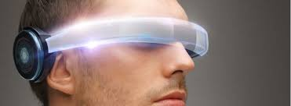

Head
home
head
feet
arms
contacts

From the development of the pocket watch, wearable technology has been a key part of modern living. It is comfortably grounded in home life, but is it now time for wearable tech to make the leap into the office as well?
Although mobiles and tablets aren’t wearable technology, we have let them infiltrate our lives and they never leave our side.
IT wire reports show that 70% of employees who purchased a tablet for personal also use it for work. This increase in taking your wearable, and frequently used technology into the workplace could be arguably blurring the line between work and home life. Is bad thing? Does it make using technology simpler?
Wearable tech set to tackle head injuries in sport
 Featuring a unique impact sensor, wearable across multiple sporting and activity applications, the device universally clips onto any helmet or halo headband, detecting G-Force and recording impact via a companion app. Utilising a traffic light system, the app records data and acts as an early warning notification for the user regarding the level of impact force recorded and highlights the caution required in continued exercise.
Founder Euan Bowen, 28, an avid rugby player, was inspired to develop the technology, named HIT Impact, after a close friend and teammate was injured. With brain injuries rarely reported, Bowen spotted a gap in the market for sportspeople to track brain health.
Featuring a unique impact sensor, wearable across multiple sporting and activity applications, the device universally clips onto any helmet or halo headband, detecting G-Force and recording impact via a companion app. Utilising a traffic light system, the app records data and acts as an early warning notification for the user regarding the level of impact force recorded and highlights the caution required in continued exercise.
Founder Euan Bowen, 28, an avid rugby player, was inspired to develop the technology, named HIT Impact, after a close friend and teammate was injured. With brain injuries rarely reported, Bowen spotted a gap in the market for sportspeople to track brain health.